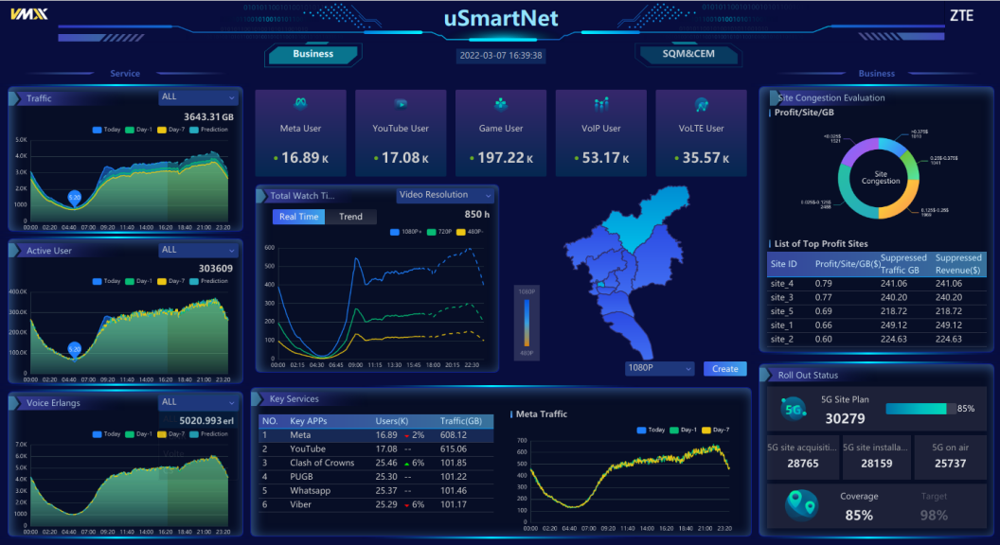
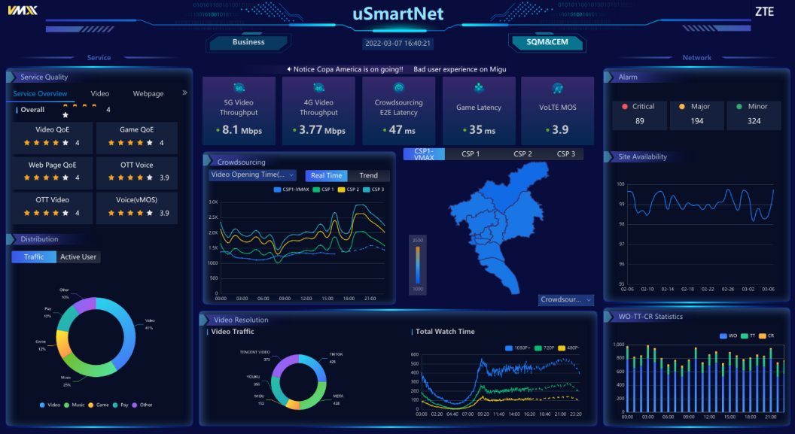
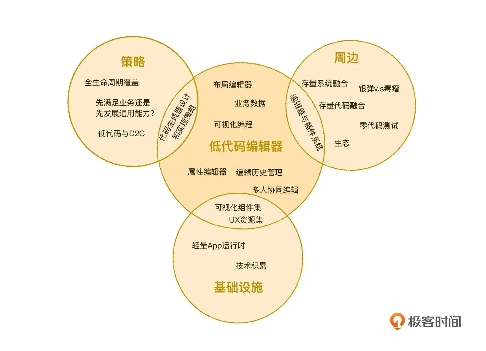
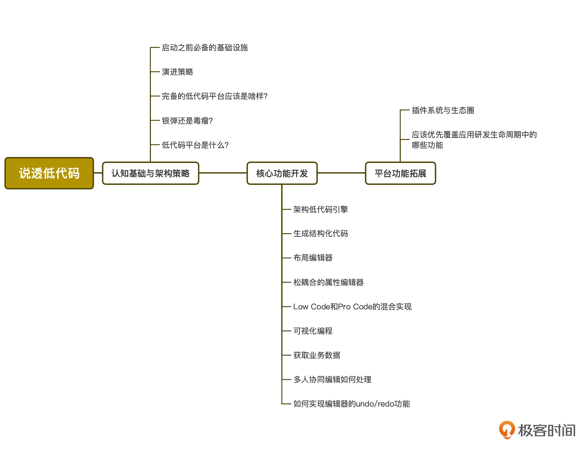
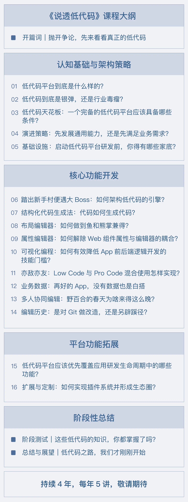
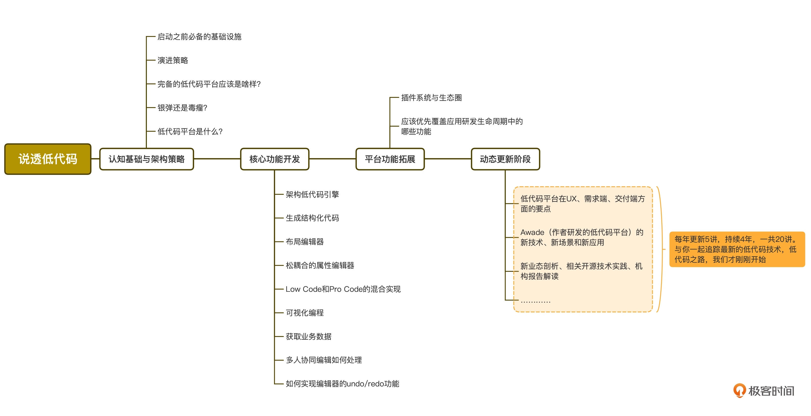

- 00 开篇词｜抛开争论，先来看看真正的低代码.md
- 01｜低代码平台到底是什么样的？.md
- 02｜低代码到底是银弹，还是行业毒瘤？.md
- 03｜低代码的天花板：一个完备的低代码平台应该具备哪些条件？.md
- 04｜演进策略：先发展通用能力还是先满足业务需求？.md
- 05｜基础设施 ：启动低代码平台研发之前，你需要有什么家底？.md
- 06｜踏出新手村便遭遇大Boss：如何架构低代码的引擎？.md
- 07｜结构化代码生成法：代码如何生成代码？.md
- 08｜布局编辑器：如何做到鱼和熊掌兼得？.md
- 09｜属性编辑器：如何解除Web组件属性与编辑器的耦合？.md
- 10 可视化编程：如何有效降低App前后端逻辑开发的技能门槛？.md
- 11｜亦敌亦友：Low Code与Pro Code混合使用怎样实现？.md
- 12 业务数据：再好的App，没有数据也是白搭.md
- 13｜多人协同编辑：野百合的春天为啥来得这么晚？.md
- 14｜编辑历史：是对Git做改造，还是另辟蹊径？.md
- 15｜低代码平台应该优先覆盖应用研发生命周期中的哪些功能？.md
- 16｜扩展与定制：如何实现插件系统并形成生态圈？.md
- 17｜兼容性问题：如何有效发现兼容性问题？.md
- 18｜兼容性问题：如何有效解决兼容性问题？.md
- 总结与展望｜低代码之路，我们才刚刚开始.md
00 开篇词｜抛开争论，先来看看真正的低代码
欢迎和我一同展开低代码的学习卷轴。
有人说我很“多情”，毕业至今 17 年，我“勾搭”过多种计算机语言和技术，有后台类的 Java、C、C++，有前台类的 TypeScript、JavaScript、HTML 和 CSS，还有不前不后的 Node.js；甚至还差点“误入歧途”转岗做 UX，2015 年我和团队还受邀组织了多次 UX 实战讲座。现在呢，我在中兴通讯担任软件研发资深专家。
看到这，你一定很好奇为什么是我来带你学习低代码？这就要谈及我“专情”的一面了。在低代码领域，我有幸成为了国内早期“吃螃蟹”的那批人，一直持续到现在，也算小有成就。
2018 年初，我收到一封闭关研讨的邮件，正式开启了我的低代码平台的架构和实现之旅，这个低代码平台叫 Awade。现在看来，我们的低代码平台的起步时间比国内绝大多数同行，包括各大互联网巨头都要早。甚至，如果将构建低代码平台的前序工作Web 组件集 Jigsaw的开发作为起点，那我们启动的时间就可以追溯到 2017 年 4 月甚至更早了。如果你感兴趣，可以点开链接了解一下这套专为低代码可视化开发打造的组件集。
经过 4~5 年的持续演进和积累，现在，由我主导的低代码平台 Awade，已经非常成熟了，成了中兴通讯事实上的标准实现。2021 年，Awade 更是获得了公司级的 CTO 专项奖，以鼓励我们在研发提效方面的贡献。
在低代码平台的应用方面，我们也有了满满的收获。到目前为止，我们主要是对内推广应用，采用低代码平台交付了 150+ 商用功能，主要客户是通讯运营商，全面覆盖了国内各大运营商，以及其他国家的知名运营商。
在我写这篇文稿时，2022 年巴塞罗那世界移动通信大会（MWC2022）正在进行。其中，中兴通讯展台里就有一组 App 是采用这个低代码平台开发的。这组 App 有酷炫的展示效果、丰富密集的交互功能、流畅的运行性能，不仅打破了低代码平台只能开发出又丑、又难用的 App 的刻板印象。更重要的是，它们定义了低代码平台能开发出高质量 App 的新高度，为低代码的支持者注入了信心。
你可以看看公开宣传资料里展出的这组 App 的 UI 效果图：


从 2019 年开始，我逐渐在国内各大行业大会上分享我在低代码平台研发方面的各种经验，由此也结识了业内许多专家，深入了解了低代码在不同公司的多样实现方式，以及良莠不一的应用效果。
这次，我将我这些年在低代码架构、实现和应用方面的积累，整理成这个专栏分享给你，希望能帮你拨开迷雾，对低代码有更客观、更深入的理解。
争论不休：银弹 v.s 毒瘤
纵观我整个职业生涯，我从来没有见过哪个技术会长时间受到如此两极分化的评价，支持者将低代码奉为“银弹”，反对者称之为“行业毒瘤”。这两种极端评价的存在，充分说明目前低代码在各个企业中的实现效果良莠不齐，方式方法也各不一样。
做得比较好的企业，确实利用低代码技术获得了显著的收益：或是降低成本，或是提升效率，又或是兼而有之。因此，这些企业往往会把低代码技术奉为银弹，大力推广，持续获利。相反的，那些未能帮助企业解决实际问题的低代码实现方式，不仅无法降低成本、提升效率，反而起到了相反的效果，这个情况下，低代码不免就被贬损为毒瘤。
其实，无论是银弹也好，毒瘤也罢，两种评论共同说明了一个问题，那就是传统 Pro Code（纯代码）的开发模式与高速增长的业务需求之间产生的矛盾越来越尖锐，我们急需一种新的模式来消除这对矛盾，低代码就是业界共同给出的新模式。
不过，低代码模式目前仍处于探索期，甚至到现在都还没有一个已达成共识的定义，它就像是一个大框，啥东西都可以往里装。
在这个时间点上，用语言去争论低代码到底是银弹还是毒瘤，其实并没有太大的意义。沉浸在争论的迷雾中，你就无法客观、理性地看待这件事情。不如我们回归技术人的处理方式，看看目前一线低代码平台真正的架构和思路，用你的技术理性做判断。毕竟，在这个话题下，没有谁比低代码的一线开发者更有发言权了（将自己代入其中也不失为一个好方法）。
但要拨开迷雾，深入了解、学习低代码，确实不怎么容易。
学习低代码难在哪儿？
低代码平台是一种非常复杂的综合系统，它的实现过程涉及到大量的通用技术、架构设计方法，需要开发大量的功能模块，代码量动辄达到数十万乃至百万行的级别，需要使用和无缝集成数以千计的开源技术。
这也就导致了学习如何开发低代码平台，与学习使用任何一门具体的技术都不一样。当前世界上并没有一个公认的低代码实现技术标准，哪怕是技术白皮书，简单地说，就是没有一个清晰的学习目标。
举个例子，4G/5G 通信协议是极其复杂的协议，学习起来显然非常不容易，但毕竟通信技术是有公认标准的，只要有恒心和信心，不停地攻克协议中的各个章节，总有一天能完成协议的学习，成为专家。但低代码不一样，虽然它的复杂度远没有通信协议那么高，但是它没有标准，学习它就意味着：没有起点也没有终点，没有正确也没有错误，没有考试也没有答案。
这样的状况对于在校学生来说是最舒服的，特别好“混”，但如果你要成为一位低代码的架构师或负责人，对你来说却是噩梦：
我学到的知识真的就是低代码所需要的吗？
有没有更好的架构思路和实现方法？
为什么业务团队总是提出平台能力之外的需求？是我错了还是他们错了？
我们常说，鞋子好不好只有脚知道，同理，低代码平台好不好，只有业务才有发言权。所以，面对这样一种知识，最合适的学习方式就是倾听他人的经验，听听别人是怎么成功的，也听听别人是怎么失败的。
虽然现在行业大会多数都有低代码专题，但以演讲形式分享低代码的实现经验实在太有限，也不成体系。对于低代码这样复杂、综合的系统来说，50 分钟左右的分享实在是杯水车薪，只能展示一些碎片化的知识内容，学习成本很高。而且不同业务背景对应不同的实施策略，有时甚至是矛盾的，不明就里只会越听越迷糊。
而专栏是一种系统展示低代码知识的极佳形式。从架构设计到演进策略，从细到代码级别的技术要点说明，到总体的技术选型思路等，我都会通过这个专栏，将我的经验充分、系统地展示给你。
如果你是一位一线开发人员，你不仅能知道当前大热的低代码到底是怎么一回事，也可以从专栏中学习到低代码编辑器各主要功能模块的具体架构方法，从而帮你提升架构能力，为未来独立架构一个功能模块做好准备，缩短从一线研发岗转型为架构岗的周期。
如果你是一位架构师，你可以从中学习到如何恰当地设计低代码编辑器和编译器之间的关系和抽象，从而架构出一套具有高度通用性的低代码编辑器，你也能知道如何围绕编译器提供扩展能力，设计出比较完备的低代码插件系统，实现通用与效率兼得。
如果你是一位决策者，那你可以从这个专栏中了解到实现低代码平台过程中的各个阶段的特点，以及采取什么样的策略可以确保平台始终朝着高通用性的方向演进，同时你还可以了解到采用哪些方法可以让平台兼具较高的开发效率和尽可能广的适用范围。
我会给你讲什么
在这个专栏中，我主要为你提供了低代码平台的核心模块，包括低代码编辑器主要功能的技术要点，以及实现思路和具体方法。
除了编辑器的实现技术要点之外，你可以从这个专栏中了解到低代码平台的架构策略和思路、从零开始打造一个低代码平台需要经历的阶段以及特点，甚至还包括低代码模式对应用全生命周期的支持，插件系统和生态圈的打造等内容。
我把这些内容整合成了下面这张知识地图：

你可以从这张图中看到，居中的低代码编辑器是低代码平台的核心功能模块，它的能力基本决定了低代码平台的能力。之所以说它是核心，不仅因为它需要提供各种基础编辑功能、所见即所得的效果，更是因为它是整个平台所有功能的锚点，低代码平台上任何内置功能、扩展功能都是以它做为入口。
同时，多数锚在编辑器上的功能，其本身也具有非常高的复杂度，任何一个功能点都有相对独立的演进线路。比如代码生成器，它与编辑器之间的关系甚至可以决定平台的长期演进策略。插件系统则是给应用团队开放的扩展和定制的能力，用于解决通用性低代码平台在具体业务落地时的各种个性化问题。基础设施则是低代码平台的基石，它的特殊在于逆向性，它的研发不得不先于低代码编辑器，而集成时却必须完全融入低代码编辑器。
不过，出于对学习梯度的考虑，我并没有完全按照这张知识地图排布内容，而是将整个专栏分成了三个部分：

你可以发现，这三部分覆盖了以低代码编辑器为核心，同时包括代码生成器及策略、基础设施、插件系统及周边等三大编辑器的主要研发支线延伸。其中低代码编辑器的内容占据了专栏的绝大部分，三大延伸内容也都覆盖了关键内容。
第一部分是认知基础与架构策略篇。
这部分中，我们不会涉及具体技术，而是主要从架构设计和演进策略等角度来学习低代码。所谓磨刀不误砍柴工，在启动低代码的研发之前，你肯定要对低代码有个大致的了解，同时也需要先有一个清晰的系统架构思路，确保各个模块有序开发和相互依赖。有明确的演进策略之后，我们才能确保演进过程能让好钢都用到刀刃上，资源不发散、不做无用功。
不仅如此，这部分还详细给出了在低代码平台启动研发之前，我们需要准备好的“家底”，哪些是必备的，哪些是可选的，哪些必须要自主掌握，哪些可以借开源社区的力，等等，帮你做到心里有数、有备无患，更好地规划好研发计划。
第二部分是核心模块开发篇。
低代码编辑器是低代码平台的核心模块，也是我们这个专栏的重点内容，占据了专栏的大部分篇幅，这部分我们会详细说明一个通用型低代码编辑器的技术实现要点。
我们整体以应用 App 开发三部曲（布局、交互、数据）为线索设计内容，我会从技术实现角度详细给出低代码编辑器的布局编辑器、属性编辑器、可视化编程编排、业务数据获取可能要用到途径等的实现方法。同时，这部分还覆盖了低代码编辑器的一些重要但容易被忽略的能力，包括多人协同编辑的支持、编辑历史管理、分支管理，甚至还包括如支持 Low Code（低代码）和 Pro Code（纯代码）混合开发等内容。
你会从具体的目录中看到，这一部分我会以低代码平台的代码生成器作为开始。这样安排，不仅是因为代码生成器是几乎任何一个低代码平台启动伊始就需要实现的功能，更是因为，多数人在开始实现代码生成器之前，不先考虑清楚它与低代码编辑器之间的关系就贸然动手，导致整个低代码平台的长期演进空间和拓展能力大大受限。
如果代码生成器与编辑器之间没有一个良好的松耦合关系，我们后面要提供插件扩展能力就很难了，而失去了插件的扩展性和定制性，会进一步导致通用型低代码平台在具体业务场景中的效率无法保证。失去了效率，低代码平台的效能等于打了半折。
第三部分是平台功能拓展篇。
这部分我们关注的是低代码平台开发能力之外的内容，主要包含了低代码在业务开发全生命周期各个环节中应该起到的作用，以及技术性、方向性建议。而且我们也会从技术实现方向，详细说明如何实现低代码平台的插件系统，从而实现低代码平台在具体业务场景中的定制、扩展，进而与业务团队一起形成一个低代码生态圈。
具体你可以看这张目录图：

到这里你可能会发现，似乎这三部分并不是这个专栏的全部。确实，这是动态更新的专栏，第一阶段更新完后的四年之内，我会以每年 5 讲的频率，继续更新，带你去看最新、最前沿的低代码技术动态。内容主要有这些方面：
增加低代码平台在 UX、需求端的能力的技术实现要点，以及在交付端的测试、运行能力的技术实现要点；
Awade 的新技术、新场景、新应用，我会精选参考价值较高的部分更新到专栏中，分享给你；
新业态剖析、相关开源技术实践与解析、新的调查机构报告解读等行业性内容。

在这漫长的征途中，我希望你可以和我、还有正在学习这门课的其他同学保持交流，分享你的学习心得和实践经验，并为课程未来的内容提供建议。
写在最后
我特别想说的一句话就是，探索低代码之路，我们才刚刚开始。
低代码是一个饱受两极化争议的技术方向，一方面大家对它有种种殷切期望，希望低代码能成为消除传统 Pro Code 的开发模式与高速增长的业务需求之间的矛盾，另一方面，低代码落地过程中出现的大大小小问题又很容易归咎于低代码，甚至怀疑低代码这个方向到底是对是错。
这里我想再引用前人的一句话，与你共勉：“虽然未来藏在迷雾中，叫人看来胆怯。但当你踏足其中，就会云开雾散。”
如果你依然对低代码抱有疑虑，我想请你踏进来，看看低代码平台真正的样子，理性地作出判断。如果你已经身处其中，是一线低代码架构者和践行者，我希望你有坚定的信念继续坚持下去，同时我也希望这个专栏的内容，能帮助你在低代码探索之路上少走弯路。并且，我将在未来至少 4 年的时间里坚持更新，在低代码的探索之路上，你，并不孤单！
如果你已经准备好踏上低代码的探索之旅，那么我们正文见！
© 2019 - 2023 Liangliang Lee. Powered by Vert.x and hexo-theme-book.